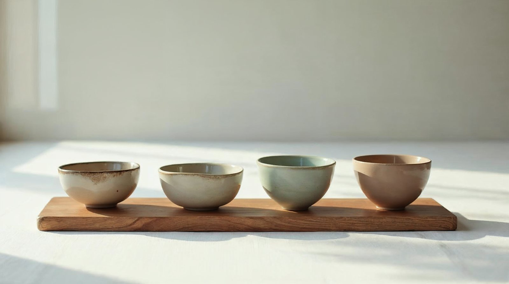
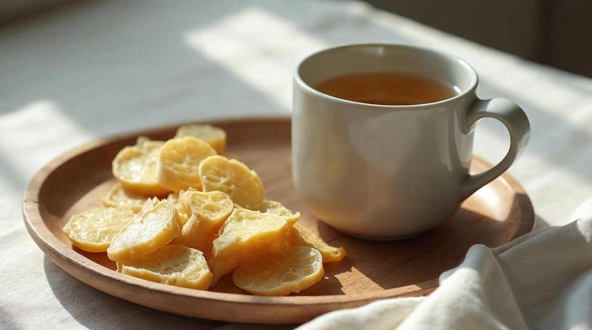
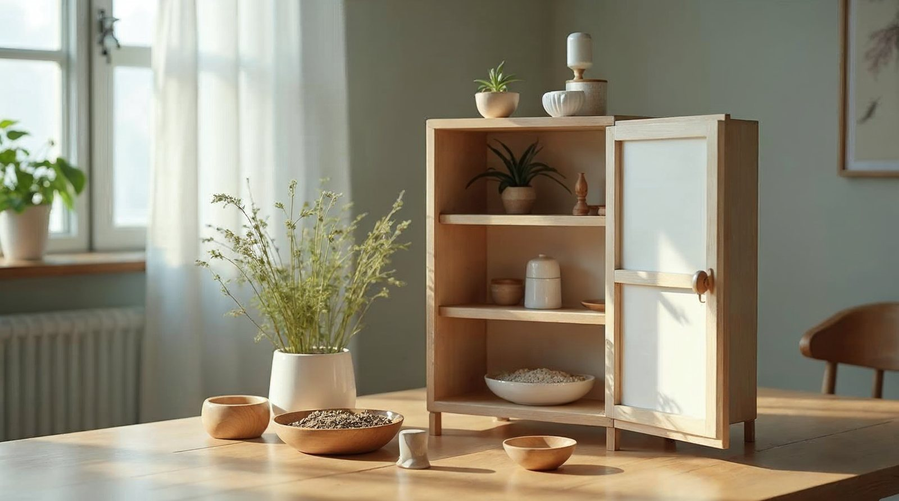

이종호 한의사 감수좋은꿈참사랑한의원 대표원장 (한의사 면허번호 19769)발행 2026-11-23 · 수정 2026-11-26
이 글의 차례
- 왜 체질을 함께 보나요
- 왜 체질은 한 번에 정해지지 않을까요
- 네 가지 유형
- 어떻게 살피나요
- 체질로 여기기 쉽지만 따로 살펴야 하는 신호는요?
- 먼저 이렇게 여쭙니다
- 예를 들면 이런 경우입니다
- 체질별 음식표는 어디까지 믿으면 될까요?
- 알아 두면 좋은 점
- 체질 이야기는 생활에서 어떻게 쓰면 좋을까요?
- 아이와 어르신의 체질은 어떻게 볼까요?
- 일상에서 먼저 해 볼 수 있는 것
- 스스로 점검해 보세요
- 체질 상담 때 이렇게 물어보셔도 좋습니다
- 얼마나 지켜보고, 언제 상담하면 좋을까요
- 진료실에서는 이렇게 진행됩니다
- 체질보다 지금의 몸을 먼저 보는 이유는 무엇일까요?
- 이렇게 기록해 오시면 상담이 쉬워집니다
- 이런 증상은 먼저 확인이 필요합니다
- 함께 읽으면 좋은 글
사상체질은 사람의 타고난 경향을 태양인, 태음인, 소양인, 소음인 네 가지로 나누어 보는 한의학의 방법으로, 체형과 소화, 땀, 성향, 병력을 종합해 참고 자료로 살핍니다. 이제마 선생의 『동의수세보원』에서 비롯된 개념이며, 과학적 근거는 제한적이라 진단을 대신하지 않습니다. 체질보다 지금의 증상과 몸 상태를 먼저 봅니다.
왜 체질을 함께 보나요
- 같은 음식, 같은 생활 습관에도 사람마다 몸의 반응이 다른 경우가 있어, 그 경향을 이해하는 실마리로 씁니다.
- 소화가 약한지, 땀이 많은지, 추위와 더위 중 무엇을 더 타는지 같은 특징을 정리하는 틀이 됩니다.
- 다만 체질은 고정된 꼬리표가 아니며, 지금의 증상과 상태가 언제나 더 중요합니다.
왜 체질은 한 번에 정해지지 않을까요
체질 경향을 알아보는 데 쓰는 단서들은 대부분 지금의 생활에도 함께 흔들립니다. 잠이 부족한 몇 주 동안은 누구나 소화가 예민해지고, 체중이 늘면 땀이 많아지고 더위를 더 타게 되며, 긴장이 큰 시기에는 성격까지 날카로워 보일 수 있습니다.
나이와 질환, 복용 중인 약도 겉으로 드러나는 모습을 바꿉니다. 갑상선 기능의 변화, 갱년기의 열감, 출산 뒤 회복기처럼 몸이 크게 달라지는 시기에는 평소의 경향과 지금의 상태가 섞여 보이기 쉽습니다.
설문 역시 본인이 생각하는 자신의 모습을 바탕으로 답하게 되어, 그날의 기분이나 최근의 경험에 따라 답이 달라지곤 합니다. 그래서 저는 체질을 한 번에 정하기보다, 진료를 이어 가며 처음의 인상이 맞는지 조금씩 다시 맞춰 봅니다.

네 가지 유형
태양인, 태음인, 소양인, 소음인으로 나뉘며 각각 장부의 강약과 성향이 다르다고 봅니다. 이 유형이 사람을 정해 놓은 것은 아니며 같은 유형 안에서도 개인차가 큽니다.
전통 이론에서 흔히 설명하는 경향은 다음과 같습니다.
- 태양인: 드문 유형으로 보며, 기운이 위로 오르기 쉬운 경향
- 소양인: 몸에 열이 많은 편이고 행동이 빠른 경향
- 태음인: 체격이 큰 편이고 땀을 흘리는 일이 잦은 경향
- 소음인: 소화가 예민하고 몸이 찬 편인 경향
이 설명은 이해를 돕는 틀일 뿐이며, 여기에 딱 들어맞는 사람은 많지 않습니다. 설명을 읽고 스스로 체질을 정하기보다 진료 때 지금의 상태와 함께 이야기해 보시길 권합니다.
어떻게 살피나요
한 가지 방법으로 단정하지 않고 아래를 종합합니다.
- 그날 짚어 본 맥과 혀의 모습
- 체형과 얼굴, 목소리
- 소화와 식욕, 변 상태
- 땀이 나는 정도, 추위와 더위를 타는 정도
- 성격과 감정 반응의 경향
- 병력과 가족력
- 잠의 모습과 대소변의 경향
체질로 여기기 쉽지만 따로 살펴야 하는 신호는요?
- 늘 몸이 차고 쉽게 지치는 것: 체질 탓으로 여기기 전에 빈혈이나 갑상선 기능 저하처럼 검사로 확인할 수 있는 이유가 없는지 살피고, 필요하면 혈액 검사를 권합니다.
- 갑자기 땀이 많아지고 가슴이 자주 두근거리는 것: 원래 그런 체질이라기보다 최근에 생긴 변화라면 갑상선 기능이나 갱년기 변화를 함께 확인해 보시는 것이 좋습니다.
- 예전과 달리 소화가 예민해진 것: 식사 시간, 스트레스, 새로 시작한 약이 겹쳐 생기는 경우가 많아, 언제부터 달라졌는지를 먼저 여쭙니다.
- 살이 잘 찌는 체질이라는 생각: 잠이 짧아지거나 앉아 있는 시간이 늘어난 시기와 겹치는지 함께 봅니다. 체성분 분석이 필요하다고 판단되면 함께 살피기도 합니다.
"원래 이런 체질이에요"라는 말 뒤에 최근 생긴 변화가 숨어 있는 경우가 있어, 저는 그 말씀을 들으면 언제부터 그랬는지를 꼭 다시 여쭙습니다.
먼저 이렇게 여쭙니다
- 평소 소화가 편한 음식과 더부룩해지는 음식이 있나요?
- 땀을 흘리고 나면 개운하신가요, 기운이 빠지시나요?
- 추위와 더위 가운데 무엇이 더 힘드신가요?
- 잠은 쉽게 드시고, 아침에 개운하신가요?
- 대변과 소변은 편하신가요?
- 긴장하거나 속상한 일이 있을 때 몸에서 먼저 반응하는 곳이 있나요?
- 체질 설문을 해 보셨다면 언제, 어떤 결과를 들으셨나요?
- 최근 몇 달 사이 체중이나 식사량이 크게 달라졌나요?
- 체질 때문에 가리고 있는 음식이 있다면 무엇인가요?
예를 들면 이런 경우입니다
- 예를 들어 인터넷 설문 결과대로 음식을 가리다가 기운이 떨어졌다는 직장인이라면, 체질 이야기보다 먼저 식사량과 체중 변화, 잠을 여쭙고 무리하게 가리던 음식부터 다시 이야기합니다.
- 예를 들어 수험생 자녀의 체질을 궁금해하는 부모님이라면, 성장기에는 변화가 많아 단정하지 않고 아이의 식사, 잠, 소화, 활동량을 함께 살핍니다.
- 예를 들어 한의원마다 체질이 다르게 나왔다는 어르신이라면, 결과를 비교하기보다 지금 불편한 점과 복용 중인 약, 소화와 땀, 잠의 흐름을 먼저 봅니다.
- 예를 들어 가족이 저마다 다른 체질식을 하느라 식탁 차리기가 버겁다는 분이라면, 체질별 식단보다 온 가족이 함께 지킬 수 있는 끼니 시간과 양부터 이야기합니다.
- 예를 들어 땀을 빼야 몸이 가볍다며 사우나를 자주 찾는다는 분이라면, 땀을 흘린 뒤의 기운과 잠, 물을 마시는 양을 함께 여쭙고 횟수를 조절해 보시도록 권합니다.
체질별 음식표는 어디까지 믿으면 될까요?
인터넷에서 흔히 보는 체질별 음식표는 전통 이론의 설명을 쉽게 정리한 것이 많습니다. 생활을 돌아보는 참고는 될 수 있지만, 표에 맞춰 식단을 짜야 할 만큼 근거가 충분하다고 보기는 어렵습니다.
실제로 음식표만 따르다 보면 단백질이나 채소처럼 꼭 필요한 음식까지 빠져 식사가 한쪽으로 치우치기 쉽습니다.
저는 음식표보다 내가 먹고 나서 편했던 음식과 불편했던 음식을 직접 적어 보는 쪽을 먼저 권합니다. 내 몸의 기록이 어떤 표보다 정확한 참고가 됩니다. 가리던 음식을 다시 드셔 보고 싶다면 한 번에 하나씩, 양을 조금씩 늘려 가며 몸의 반응을 적어 보세요.
알아 두면 좋은 점
- 인터넷 설문 한 번으로 체질을 정해 음식을 가리는 것은 권하지 않습니다.
- 알레르기나 질환이 있으면 체질보다 의학적 기준이 우선입니다.
- 체질을 이유로 복용 중인 약을 끊거나 바꾸지 않습니다.
체질 이야기는 생활에서 어떻게 쓰면 좋을까요?
체질 이야기를 생활에 쓸 때는 "무엇을 하지 말아야 하는가"보다 "내 몸이 어떤 때 편하고 어떤 때 불편한가"를 알아 가는 도구로 쓰시길 권합니다. 금지 목록을 늘리면 식사가 좁아지고, 그 자체가 스트레스가 되기 쉽습니다.
예를 들어 찬 음식을 먹으면 배가 불편하다는 걸 알았다면, 그 음식을 아예 끊기보다 따뜻한 음식과 함께 먹거나 양을 줄여 보는 식으로 조절해 볼 수 있습니다. 땀을 흘린 뒤 지치는 편이라면 운동을 그만두기보다 강도를 낮추고 물을 자주 마셔 보는 쪽을 먼저 권합니다.
운동도 같은 원리로 볼 수 있습니다. 어떤 운동이 체질에 맞는지 고민하기보다, 운동한 다음 날 아침에 개운한지 무거운지를 기준으로 종류와 시간을 조금씩 바꿔 보세요.
계절이 바뀔 때도 마찬가지입니다. 더위를 많이 타는 분은 여름 냉방에 몸이 너무 식지 않는지, 추위를 많이 타는 분은 겨울에 실내에서 너무 움직이지 않는지를 살펴보시면 좋습니다.
아이와 어르신의 체질은 어떻게 볼까요?
아이는 자라면서 체형과 식욕, 잠, 성격이 빠르게 달라집니다. 어릴 때 들은 체질 이야기를 그대로 믿고 음식을 가리면 성장기에 필요한 영양이 부족해질 수 있어, 저는 아이의 체질은 단정하지 않고 지금의 식사와 잠, 활동을 중심으로 봅니다.
어르신은 오래 드신 약과 지병, 줄어든 근육량이 겉모습에 영향을 줍니다. 젊을 때와 지금의 몸이 다르게 느껴지는 것이 자연스러워서, 체질보다 지금 드시는 약과 소화, 잠, 걷는 힘을 먼저 여쭙습니다.
체질에 대한 궁금증이 크시다면 관련 글도 참고하세요(내 체질이 궁금할 때, 사상체질은 진료실에서 어떻게 참고하고 어디까지 믿으면 되나요?).
일상에서 먼저 해 볼 수 있는 것
- 체질 결과로 음식을 가리기 전에 끼니 시간과 양부터 일정하게 맞추기
- 2주쯤 먹은 음식과 그 뒤 속의 느낌, 대변 상태를 짧게 적어 보기
- 땀을 흘린 뒤 개운한지, 지치는지 적어 두기
- 잠드는 시각과 깨는 시각을 적어 두기
- 특정 음식을 끊어 보고 싶다면 상담 뒤에 정하기

스스로 점검해 보세요
- 같은 음식을 먹어도 유독 나만 더부룩한 경우가 잦다
- 땀을 조금만 흘려도 기운이 빠진다
- 추위나 더위 가운데 한쪽을 유난히 탄다
- 긴장하면 소화나 잠이 먼저 흔들린다
- 인터넷 설문으로 체질을 정해 음식을 가리고 있다
- 체질식을 시작한 뒤 체중이 줄거나 기운이 떨어졌다
여러 항목에 해당하면 진료 때 그대로 말씀해 주세요. 체질보다 지금의 몸 상태를 먼저 살피는 데 도움이 됩니다.
체질 상담 때 이렇게 물어보셔도 좋습니다
- 지금 들은 설명은 전통 이론에 따른 것인가요, 연구로 확인된 내용인가요?
- 제가 지금 가리고 있는 음식을 계속 가려도 괜찮을까요?
- 체질보다 먼저 살펴야 할 지금의 불편은 무엇인가요?
- 복용 중인 약이나 영양제와 함께 생각해야 할 점이 있나요?
- 다음 진료까지 생활에서 한 가지만 바꾼다면 무엇이 좋을까요?
- 가족과 같은 식탁에서 먹을 때는 무엇을 조심하면 될까요?
- 지금 하고 있는 운동을 그대로 이어 가도 괜찮을까요?
이런 질문을 편하게 해 주시면 체질 이야기가 막연한 꼬리표로 남지 않고, 지금의 생활에 쓸 수 있는 이야기로 이어집니다. 저도 대답할 때 확인된 내용과 전통적인 설명을 나눠서 말씀드리려고 합니다. 모르는 부분은 모른다고 말씀드리는 것도 그 일부입니다.
얼마나 지켜보고, 언제 상담하면 좋을까요
- 체질식을 하다가 1~2주 사이 체중이 줄거나 기운이 떨어지면, 가리던 음식을 무리하게 이어 가지 말고 상담을 받아 보세요.
- 소화, 땀, 잠 같은 불편이 2~4주 넘게 이어지면 체질보다 지금 상태를 먼저 살피는 진료를 권합니다.

진료실에서는 이렇게 진행됩니다
좋은꿈참사랑한의원에서는 먼저 지금 불편한 점과 생활을 충분히 듣고, 진맥을 기본으로 하고 필요하다고 판단될 때 설진·복진과 함께 체질의 경향을 참고해 침이나 한약 상담 등 상태에 맞는 방법을 정합니다. 체질 이야기는 생활을 돌아보는 참고로 쓰며, 결과를 약속하는 근거로 쓰지 않습니다.
첫 방문에는 지금 가장 불편한 점과 함께 소화, 땀, 잠, 대소변, 추위와 더위를 타는 정도, 병력과 복용 중인 약을 먼저 여쭙고 맥을 짚습니다. 필요하다고 판단되면 혀와 배를 살피고, 체형과 목소리 같은 겉모습도 함께 봅니다.
그런 다음 체질 경향은 참고로만 말씀드리고, 지금 상태에 맞는 치료 방향과 생활에서 먼저 살필 점을 설명드립니다. 다시 오실 때도 맥부터 다시 짚습니다.
체질보다 지금의 몸을 먼저 보는 이유는 무엇일까요?
같은 체질 경향이라도 오늘 잠을 못 잔 사람과 푹 잔 사람, 소화가 무거운 사람과 편한 사람은 필요한 도움이 다릅니다. 체질은 오래 이어지는 바탕을 이해하는 데 쓰고, 진료 방향은 지금 드러난 증상과 진찰에서 본 것을 기준으로 정합니다.
그래서 진료실에서 체질 이야기가 길어지지 않는다고 서운해하지 않으셨으면 합니다. 맥과 혀, 생활 이야기를 충분히 들은 뒤에 체질의 경향을 덧붙이는 것이, 지금의 몸을 놓치지 않는 방법이라고 생각합니다.
이렇게 기록해 오시면 상담이 쉬워집니다
- 평소 소화가 편한 음식과 불편한 음식
- 땀이 많은 때와 추위·더위를 타는 정도
- 지금까지의 병력, 가족력, 복용 중인 약
- 받은 건강검진 결과(있다면)
- 다른 곳에서 체질 상담을 받았다면 그때 들은 내용
이런 증상은 먼저 확인이 필요합니다
- 체질에 맞춘다며 특정 음식을 끊어 체중이 줄거나 기운이 떨어진 경우
- 음식을 가리다가 어지럼이 심해 쓰러질 것 같거나 정신을 잃은 적이 있는 경우(가까운 응급실)
이런 신호가 있으면 한의원보다 가까운 병원이나 응급실을 먼저 찾으세요.
함께 읽으면 좋은 글

여쭙는 것
- 평소 소화가 편한 음식과 더부룩해지는 음식이 있나요?
- 땀을 흘리고 나면 개운하신가요, 기운이 빠지시나요?
- 추위와 더위 가운데 무엇이 더 힘드신가요?
생활에서 해 볼 것
- 체질 결과로 음식을 가리기 전에 끼니 시간과 양부터 일정하게 맞추기
- 2주쯤 먹은 음식과 그 뒤 속의 느낌, 대변 상태를 짧게 적어 보기
- 땀을 흘린 뒤 개운한지, 지치는지 적어 두기
먼저 확인이 필요한 신호
- 체질에 맞춘다며 특정 음식을 끊어 체중이 줄거나 기운이 떨어진 경우
- 음식을 가리다가 어지럼이 심해 쓰러질 것 같거나 정신을 잃은 적이 있는 경우(가까운…
한눈에 보는 표
| 구분 | 핵심 |
|---|---|
| 여쭙는 것 | 평소 소화가 편한 음식과 더부룩해지는 음식이 있나요? 땀을 흘리고 나면 개운하신가요, 기운이 빠지시나요? |
| 생활에서 해 볼 것 | 체질 결과로 음식을 가리기 전에 끼니 시간과 양부터 일정하게 맞추기 2주쯤 먹은 음식과 그 뒤 속의 느낌, 대변 상태를 짧게 적어 보기 |
| 먼저 확인이 필요한 신호 | 체질에 맞춘다며 특정 음식을 끊어 체중이 줄거나 기운이 떨어진 경우 음식을 가리다가 어지럼이 심해 쓰러질 것 같거나 정신을 잃은 적이 있는 경우(가까운 응급실) |
자주 묻는 질문
체질에 맞는 음식이 따로 정해져 있나요?
체질만으로 음식을 정하기는 어렵습니다. 현재 건강 상태와 질환, 복용 중인 약이 우선이며 식사와 수면 같은 생활 전체를 함께 살핍니다.
아이의 체질도 볼 수 있나요?
성장 중에는 변화가 있어 단정하기보다 참고로 살핍니다.
체질을 알면 한약이 정해지나요?
아닙니다. 한약은 체질만이 아니라 지금의 증상과 진찰 결과를 함께 보고 상담 뒤에 정합니다.
체질은 평생 바뀌지 않나요?
사상의학에서는 타고난 경향으로 보지만, 실제 몸 상태는 나이와 생활에 따라 달라지므로 지금의 증상과 함께 살핍니다.
체질 설문을 해 보면 정확한가요?
설문은 참고 자료일 뿐이며, 체형과 소화, 땀, 병력 같은 여러 정보를 함께 봐야 합니다.
좋은꿈참사랑한의원은 재진 때 지난번 이야기부터 이어서 여쭙니다. 진료시간과 예약은 오시는 길에서 확인하세요.
어디서 상담받을 수 있나요?
좋은꿈참사랑한의원은 서울 동작구 만양로2길 2 신성빌딩 3층·5층(서울 동작구 상도동, 7호선 상도역 3번 출구 근처)에 있습니다. 한의사 3명(이종호 대표원장, 조영기 수석진료원장, 정원영 진료원장)이 진료합니다. 진료시간은 평일 09:30~20:00(점심 13:00~14:00), 토·일·공휴일 09:30~15:00이며, 방문 전 전화로 확인을 권합니다. 예약은 네이버 예약, 카카오톡 상담, 전화 02-815-7510로 받습니다.
이 글은 일반적인 건강 정보이며 개인의 진단이나 치료를 대신하지 않습니다. 증상이 있거나 복용 중인 약이 있다면 진료를 통해 확인하세요. 치료 효과는 개인마다 다를 수 있습니다.
작성 기준: 일반적으로 알려져 있는 건강 정보를 참고해 정리했습니다(대표원장 감수). 증상 기록은 1~2주 동안 하루 1회, 비슷한 시간에 적어 오시면 지난 상태와 비교하기 쉽습니다.